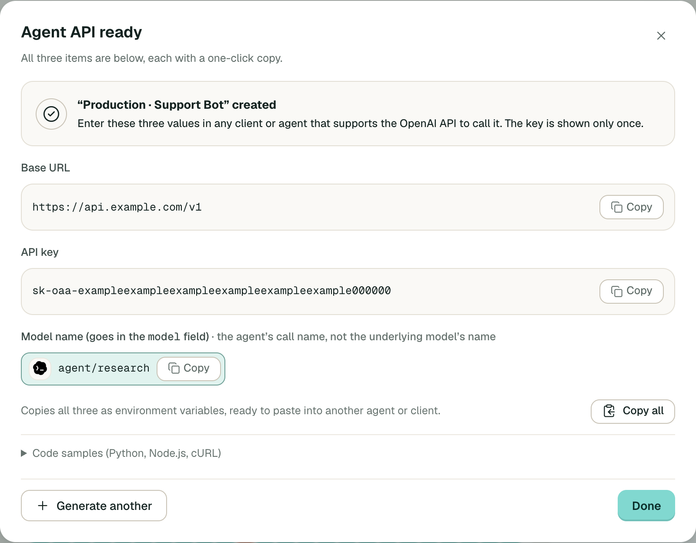
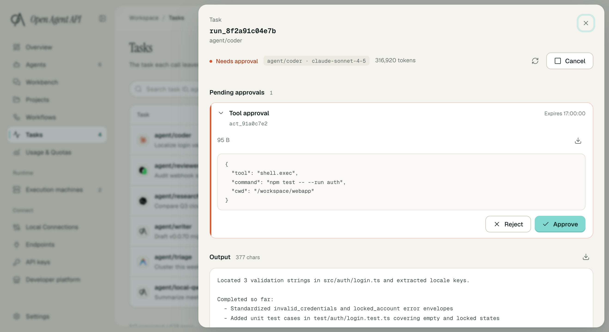
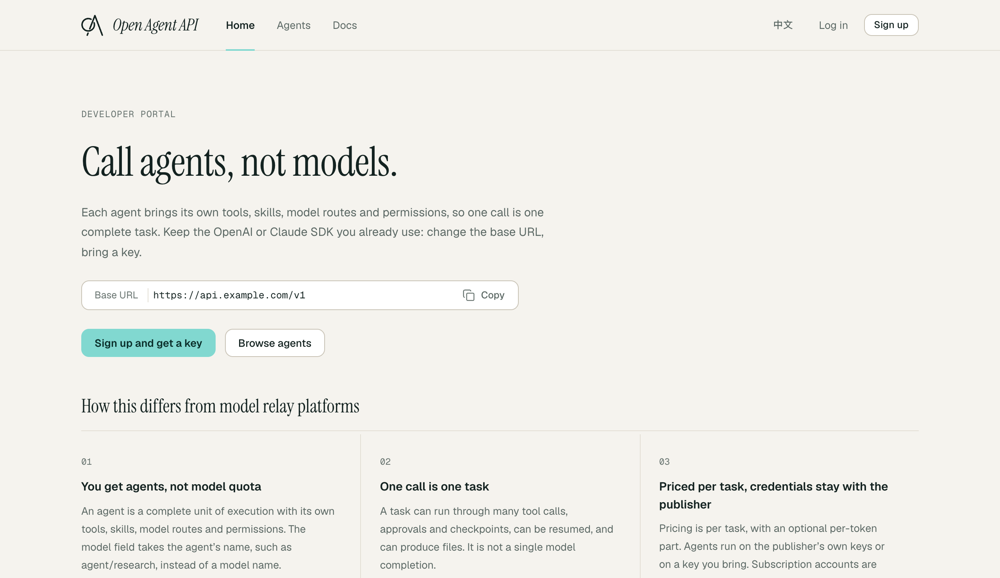

Open source · Self-hosted · Apache-2.0
Turn agents into an API.
You call an agent, not a model: one with its own tools, skills, and permissions. One call is one task. Compatible with the OpenAI, Claude, and Gemini protocols and their official SDKs; the caller needs only a Base URL and an API key.

One line
Change one line of Base URL, and your app gains an agent that does the work
The same OpenAI SDK code with only base_url and
model changed goes from calling a model to calling an agent.
from openai import OpenAI client = OpenAI( base_url="https://api.openai.com/v1", api_key=OPENAI_API_KEY, base_url="http://127.0.0.1:8787/v1", # your gateway api_key="sk-oaa-…", # key from the console) resp = client.chat.completions.create( model="<some-model>", model="agent/research", # the agent's call name messages=[{"role": "user", "content": "Compare quotes"}],)print(resp.choices[0].message.content)import OpenAI from 'openai'; const client = new OpenAI({ baseURL: 'https://api.openai.com/v1', apiKey: process.env.OPENAI_API_KEY, baseURL: 'http://127.0.0.1:8787/v1', // your gateway apiKey: process.env.OAA_API_KEY, // key from the console}); const resp = await client.chat.completions.create({ model: '<some-model>', model: 'agent/research', // the agent's call name messages: [{ role: 'user', content: 'Compare quotes' }],});console.log(resp.choices[0].message.content);The caller needs only three things
The service address (Base URL), the API key, and the model name. After you create a key in the console, the result page lists all three, each with a copy button.
model holds the agent's call name, not the name of an
underlying model; which model runs behind it is declared by the publisher when the
agent is published.

Install
Pick a way to install it
Every route ends with one command, oaa quickstart: it starts
a gateway on 127.0.0.1, publishes an offline sample agent and makes the first call. No
model key is needed.
Packages
- macOS and WindowsInstallers on the Releases page, Node.js bundled; not notarized or code-signed
-
Linuxx64 and arm64, no root:
curl -fsSL …/install.sh | sh -
npmThe tarball on the Releases page:
npm install -g <URL>
From a checkout
-
Docker
docker compose up --build -d; the port is published on 127.0.0.1 only -
SourceNode.js 24 or 26:
npm run oaa -- quickstart
Steps, limits and uninstalling for each route are in Installing. The Linux package, the npm tarball and the Docker image come with releases from 0.0.65 on.
What it is
Not another model relay
01
An agent, not a model
What is distributed is a complete execution unit with its own tools, skills, model routes, and permissions. One call is one task: a multi-turn tool loop that produces artifacts and can be resumed. No subscription pooling, and no relaying of login sessions.
02
Three protocols, as they are
OpenAI Chat and Responses, Claude Messages, Gemini generateContent. The official SDKs only need a new service address and key; they and several frameworks are run against the gateway in a compatibility lab. Images and JSON that is guaranteed to fit a schema work on all of them.
03
A person in the loop
An operation that needs approval stops the task at "awaiting approval", and once you approve it, in the console, the terminal or your own system through a webhook, the same task carries on. Tasks can be cancelled, resumed, and made idempotent, and every task's timeline and steps can be inspected.

Connections
Connected agents and protocols
Built-in agents and external agents installed on the machine can both be published as an API. The difference is in depth of interaction, not in whether an agent can be connected.
Agents
- Built-in agentsDefined in OAA-Lang or JSON; approvals and caller-tool bridging
- CodexApprovals; no caller-tool bridging
- Claude CodeApprovals; output streamed per message
- AntigravityNo approvals; the only external agent validated for real so far
- ACP agentsApprovals and caller-tool bridging
- Your own adapteroaa/1 over stdio, streaming, or HTTP
- A2A remote agentsNo approval bridging; resumes the same task through contextId
Protocols
- OpenAI ChatStanding regression tests with the official openai SDK, streaming or not
- OpenAI ResponsesSame; continues with previous_response_id
- Claude MessagesStanding regression tests with the official @anthropic-ai/sdk
- GeminigenerateContent; run with the official Python and Node SDKs in the lab
- oaa/1 nativePOST /v1/invoke
- MCP entryDiscover and call agents; deliberately no tool for approving
The full comparison of streaming, approvals, cancellation, resume, and usage per connection is in Connecting external agents. An external agent's permissions are inherited; the gateway does not sandbox it.
Developer platform
It can also be a developer platform
Click "Enable" in the console, and developers can register themselves, create their own keys in a portal, and call the agents you list, billed in credits per task.
- Self-service accounts and keys: developers create and delete their own keys, and their data is isolated from one another.
- Credits per task: one price per task, with an optional per-token price on top.
- Credits are only an accounting unit: there is no real payment channel, and no email is sent.
- External agents, one listing at a time: a switch, off by default, lets platform accounts call a chosen external agent.
- Off by default: when it is not enabled none of this exists.

Status
Status and limits
What has been done and what has not, stated plainly.
Done
- 1,021 tests written with node:test, run in CI on Linux, macOS and Windows, on Node 24 and 26.
- A compatibility lab: the official SDKs and several frameworks run against the gateway, and popular chat clients are replayed (with a sample agent, not a real one).
- One real-agent validation with Antigravity, 12 calls in all: OpenAI Chat (non-streaming and streaming), Responses continuation, Claude Messages, Gemini generateContent, cancellation, and concurrency.
- Approvals, interrupt and resume, idempotency, the task inspector, structured output, image input, run-event webhooks, and a developer platform you can enable in one click.
Not yet
- Codex, Claude Code, and built-in agents with a real model provider have not had end-to-end validation; image delivery to the first two is implemented from documentation only.
- Public deployment has not been validated in a real public environment.
- A real payment channel: there is none, and credits are not connected to payments.
- The developer platform is a single gateway with SQLite; no multiple instances.
- The macOS and Windows installers are not notarized or code-signed, and the desktop app was checked by hand only once.
The tests use a local deterministic model and fixtures; they cannot prove compatibility or performance with real providers. The full account is in the README's Status and limits.